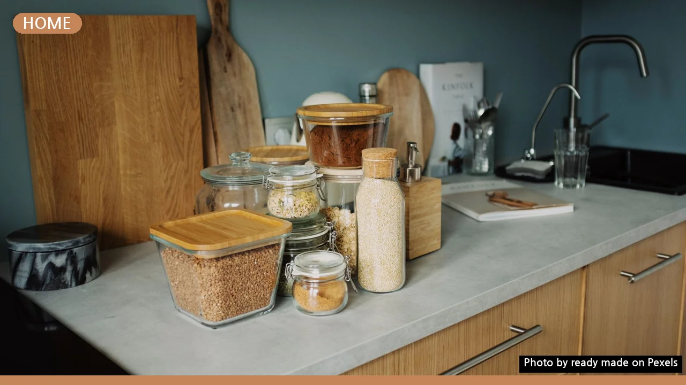
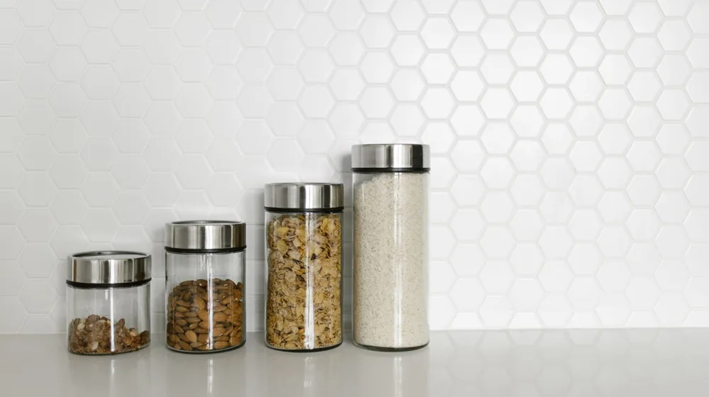

좁은 주방 넓게 쓰는 기적! 수납 아이디어 5가지
사진: ready made / Pexels (무료 이미지, 출처 표기)
좁은 주방, 왜 항상 답답하게 느껴질까요?

좁은 주방은 많은 분의 고민거리입니다. 조리할 공간이 부족하거나, 동선이 복잡하게 꼬여 답답함을 느끼는 경우가 많습니다. 물건을 찾기 어렵고, 결국 주방 전체가 어수선해 보이는 악순환에 빠지기도 합니다. 문제는 단순히 수납 공간이 적어서라기보다, 한정된 공간을 어떻게 효율적으로 활용하느냐에 달려 있습니다.
이 글에서는 2026년 9월 기준으로 좁은 주방을 넓고 쾌적하게 만드는 실질적인 수납 아이디어를 소개합니다. 우리 집 주방에 맞는 전략부터 스마트 아이템 활용법, 그리고 꾸준한 정리 습관까지, 지금 바로 적용할 수 있는 비결을 함께 살펴보세요.
우리 집 주방에 맞는 수납 공간 유형별 전략
좁은 주방을 효과적으로 정리하려면 각 공간의 특성을 이해하고 그에 맞는 수납 전략을 세우는 것이 중요합니다. 주로 사용하는 싱크대 상부장과 하부장, 그리고 냉장고 옆이나 문 주변의 틈새 공간까지 놓치지 않고 활용해야 합니다.
- 상부장: 비교적 가볍고 자주 사용하지 않는 그릇, 컵, 비상식량 등을 보관하기 좋습니다. 무거운 물건을 넣으면 문을 여닫을 때 위험할 수 있으니 주의하세요. 선반 트레이를 활용해 공간을 2배로 늘릴 수 있습니다.
- 하부장: 냄비, 프라이팬, 각종 양념통 등 부피가 크거나 무거운 물건을 보관하기에 적합합니다. 서랍형 수납이나 깊은 바스켓을 활용하면 안쪽 물건도 쉽게 꺼낼 수 있습니다.
- 틈새 공간: 냉장고와 벽 사이, 싱크대 옆의 좁은 공간은 바퀴 달린 틈새 수납장을 두어 양념병이나 비축 식료품을 보관하기에 좋습니다. 평소 잘 보이지 않아 잊기 쉬운 공간이므로 계획적으로 활용해야 합니다.
벽과 문, 숨겨진 수직 공간을 활용하는 법
좁은 주방에서는 가로 공간이 부족하기 때문에 벽과 문 등 수직 공간을 적극적으로 활용해야 합니다. 시각적으로도 깔끔하고 실제 수납 효과도 뛰어난 아이디어들을 소개합니다.
- 벽 선반 및 키친툴 걸이: 자주 사용하는 컵이나 양념통, 칼 등의 조리 도구는 벽 선반이나 자석 칼블럭(자석으로 칼을 붙여 보관하는 도구), 키친툴 걸이 등을 활용해 손이 닿기 쉬운 곳에 정리합니다. 이때, 너무 많은 물건을 걸면 주방이 더 복잡해 보일 수 있으니 최소한의 아이템만 배치하는 것이 좋습니다.
- 타공판(페그보드) 활용: 타공판은 구멍이 뚫린 패널로, 원하는 위치에 다양한 형태의 고리나 선반을 걸어 사용할 수 있습니다. 주방 용품뿐 아니라 작은 식물이나 메모 등을 함께 걸어 인테리어 효과까지 얻을 수 있습니다. 필요에 따라 구성 변경이 용이하여 실용적입니다.
- 문 안쪽 수납 포켓: 주방 문이나 싱크대 문 안쪽에 걸이형 수납 포켓을 설치하면 비닐봉투, 청소용품, 자잘한 식료품 등을 깔끔하게 보관할 수 있습니다. 문을 닫으면 감춰지기 때문에 지저분해 보일 걱정도 덜 수 있습니다.
좁은 주방의 효율을 높이는 스마트 수납 아이템
시중에 나와 있는 다양한 수납 아이템들을 활용하면 좁은 주방도 훨씬 효율적으로 사용할 수 있습니다. 2026년 9월 기준으로 많이 사용되는 몇 가지 아이템들을 비교해 보세요.
이 외에도 문에 거는 휴지통, 싱크대 배수관 공간을 피해 설치하는 선반 등 다양한 아이디어가 많습니다. 우리 집 주방의 크기와 동선을 고려하여 필요한 아이템을 선택하는 것이 중요합니다. 정확한 제품 정보 및 가격은 각 제조사나 판매처에서 확인하는 것이 좋습니다.
꾸준함을 위한 좁은 주방 정리 습관 만들기
아무리 좋은 수납 아이디어와 도구가 있어도 정리 습관이 뒷받침되지 않으면 주방은 다시 지저분해지기 쉽습니다. 다음 세 가지 습관을 통해 좁은 주방을 꾸준히 쾌적하게 유지해 보세요.
- 비움의 미학 실천: 1년에 한두 번은 사용하지 않는 그릇, 유통기한이 지난 식재료, 망가진 주방 도구를 과감히 버리거나 정리합니다. 공간을 채우기보다 비우는 것이 좁은 주방을 넓게 쓰는 가장 좋은 방법입니다.
- 원위치 습관화: 물건을 사용한 후에는 반드시 제자리에 두는 습관을 들입니다. 모든 물건에 '집'을 만들어 주는 것이 중요하며, 가족 구성원 모두가 이 원칙을 지키도록 합니다.
- 자주 쓰는 것만 꺼내두기: 매일 사용하는 커피포트나 토스터 외에는 최대한 싱크대 상판 위를 비워둡니다. 조리 공간을 확보하고 시각적으로도 깔끔함을 유지하는 데 큰 도움이 됩니다.
좁은 주방 수납, 이것만은 꼭 알아두세요
좁은 주방을 정리할 때 독자들이 자주 궁금해하는 질문들을 정리했습니다.
Q1: 어떤 물건부터 정리하는 것이 좋을까요?
A1: 먼저 '버릴 것'을 구분하는 것이 가장 중요합니다. 유통기한이 지났거나 고장 난 물건, 1년 이상 사용하지 않은 물건들을 먼저 비워내세요. 그 다음으로 자주 쓰는 물건과 가끔 쓰는 물건을 분류하고, 각자의 자리를 정해줍니다.
Q2: 수납용품을 구매할 때 주의할 점이 있나요?
A2: 주방 공간의 정확한 치수를 재는 것이 필수입니다. 막연하게 '들어갈 것 같다'고 생각하여 구매했다가 공간에 맞지 않아 낭패를 볼 수 있습니다. 또한, 주방의 전체적인 분위기를 해치지 않는 색상과 디자인을 선택하는 것이 좋습니다.
Q3: 정리 후에도 다시 지저분해지는 것을 막으려면 어떻게 해야 하나요?
A3: 주기적인 점검과 소량의 정리 시간을 갖는 것이 중요합니다. 매일 잠자리에 들기 전 5분, 혹은 주말에 30분 정도 시간을 내어 흐트러진 곳은 없는지 확인하고 제자리에 두는 습관을 들이세요. 가족 구성원 모두가 정리 원칙을 공유하고 함께 실천하는 것도 중요합니다.
🔗 이 글도 함께 보면 좋아요: 베란다 확장, 후회 없이 하려면? 이것부터 확인하세요!
관련 추천 상품
주방 정리대, 싱크대 수납, 좁은 주방 수납 관련 인기 상품 보러가기
이 포스팅은 쿠팡 파트너스 활동의 일환으로, 이에 따른 일정액의 수수료를 제공받습니다.